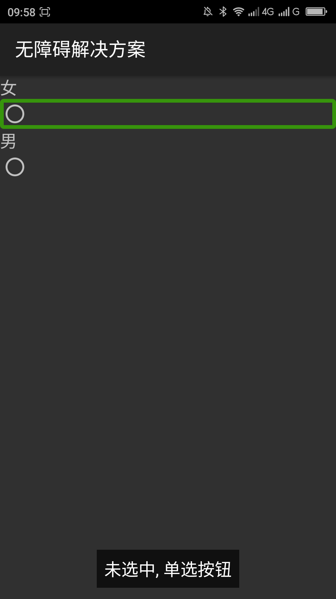
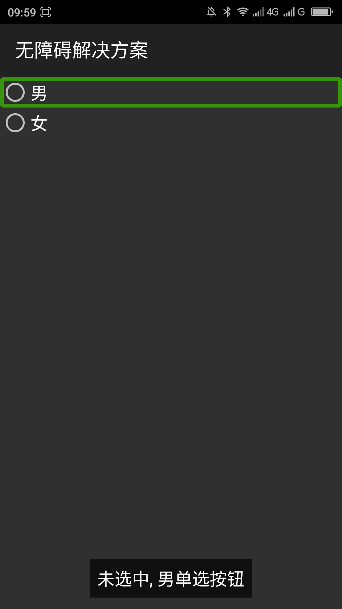
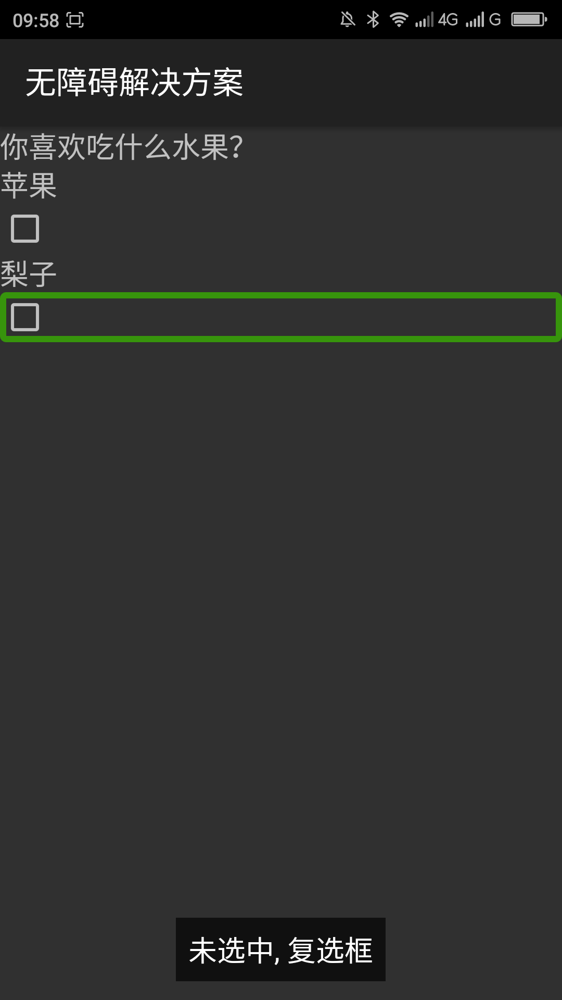
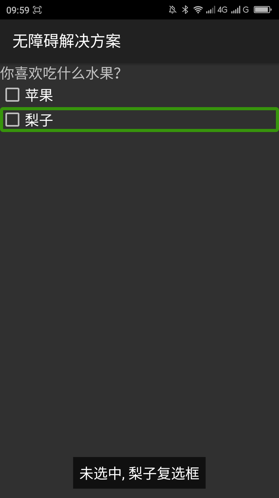

返回
单选按钮（RadioButton）没有添加目的说明文本，只能朗读出单选按钮的选中状态和控件类型，用户无法从这些信息中了解到对此单选按钮进行操作会达到什么目的。
为了提供有关界面控件的文本信息（来代替视图提示），可使用 android:contentDescription属性。在这个属性中你提供的文本在屏幕上是不可见的，但如果用户启用了无障碍服务，提供声音提示，那么属性中的描述就能够朗读给用户。在单选按钮的Android:contentDescription中描述此单选按钮的目的，如：“男”。
|  |  |
| 优化前，屏幕阅读器朗读“未选中，单选按钮” | 优化前，屏幕阅读器朗读“未选中，男单选按钮” |
|  |  |
| 优化前，屏幕阅读器朗读“未选中，复选框” | 优化前，屏幕阅读器朗读“未选中，梨子复选框” |
本解决方案对复选框（CheckBox）一样有效。